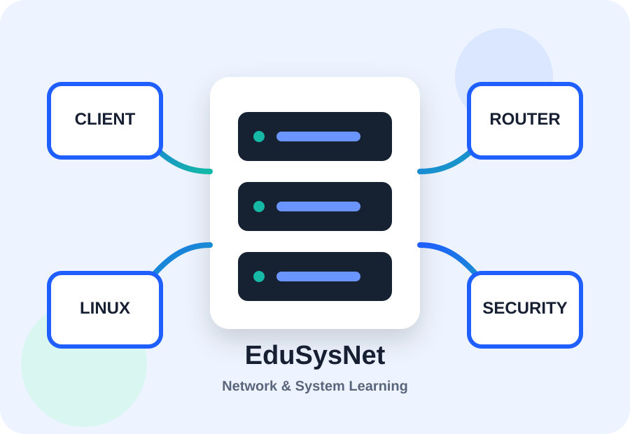
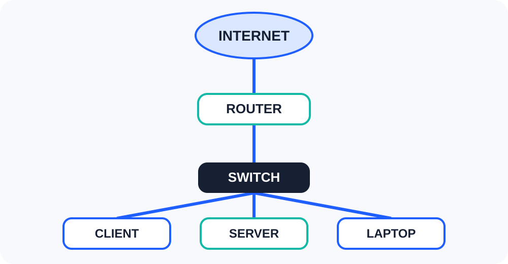

Tujuan Pembelajaran
Membantu pengguna memahami konsep dasar Network dan System sebelum mempelajari konfigurasi yang lebih kompleks.
Website Edukasi Network & System
EduSysNet membantu pemula mempelajari networking, Linux, server, dan keamanan sistem melalui materi yang singkat, terstruktur, dan mudah dipahami.
Mulai dari IP Address, DNS, Linux, Nginx, sampai dasar keamanan jaringan.

EduSysNet adalah website pembelajaran sederhana yang membahas dasar-dasar jaringan komputer dan administrasi sistem.
Membantu pengguna memahami konsep dasar Network dan System sebelum mempelajari konfigurasi yang lebih kompleks.
Mahasiswa, siswa, maupun pemula yang ingin mengenal networking dan system administration dari dasar.
Materi ringkas, daftar langkah, tabel port, media audio-video, dan quiz interaktif.
Pilih topik yang ingin dipelajari terlebih dahulu.
Diagram berikut menggambarkan hubungan internet, router, switch, server, dan client.

Beberapa port jaringan yang umum digunakan.
| Service | Protocol | Port | Fungsi |
|---|---|---|---|
| FTP | TCP | 21 | Transfer file |
| SSH | TCP | 22 | Remote server secara aman |
| DNS | TCP/UDP | 53 | Resolusi nama domain |
| HTTP | TCP | 80 | Akses website |
| HTTPS | TCP | 443 | Akses website terenkripsi |
Port membantu sistem operasi membedakan layanan yang berjalan pada sebuah perangkat jaringan. Contohnya, HTTP umumnya menggunakan port 80 dan HTTPS menggunakan port 443.
EduSysNet juga menyediakan media audio dan video agar pembelajaran lebih variatif.
Video singkat untuk memperkenalkan topik Network dan System.
Dengarkan pengenalan singkat mengenai jaringan komputer.
Jawab tiga pertanyaan berikut lalu periksa nilai Anda.
Berikan saran mengenai materi yang ingin ditambahkan ke EduSysNet.
Email: edusysnet@example.com